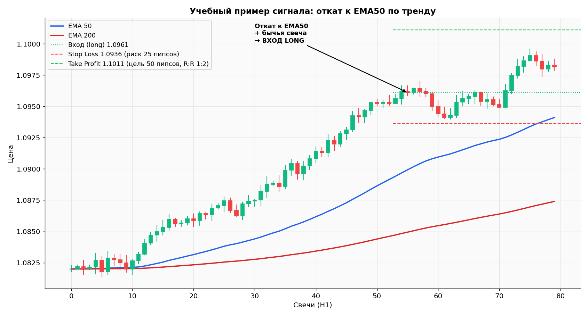

«ЭМА50 га орқага қайтиш тренд бўйича» стратегияси — батафсил таҳлил¶
🌐 Таржима / Перевод
Бу — саҳифанинг ўзбекча версияси. Асл нусхаси рус тилида; тилни саҳифа юқорисидаги тил танлагич орқали алмаштириш мумкин. Это узбекская версия страницы; оригинал доступен на русском.
Бу ўқув стратегияси, Граал эмас. Мақсад — савдо ёндашувининг тузилишини кўрсатиш: қоидалар, риск-менежмент, текшириш. Ҳар қандай стратегияни реал савдодан олдин демода камида 100 та савдода синаб кўришингиз шарт.
Мундарижа¶
- Стратегия ғояси
- Тўлиқ савдо тизими нима
- Стратегия параметрлари
- Лонг кириш шартлари
- Шорт кириш шартлари
- Савдодан чиқиш
- Позицияни бошқариш
- Графикдаги кўргазма
- Бектест ва форвард-тест
- Стратегия ИШЛАМАЙДИГАН ҳолатлар
- Журнал орқали стратегияни такомиллаштириш
1. Стратегия ғояси¶
Арзонроққа сотиб ол, қимматроққа сот — оддий туюлади, аммо стратегиянинг мантиқий асоси айнан шу.
Кучли трендда нарх тўғри чизиқ бўйлаб кетмайди: у импулслар ва орқага қайтишлар (пуллбаск) ҳосил қилади. Бу стратегия тренд йўналишидаги орқага қайтишларни ушлайди, экстремал нуқталарни эмас.
Мантиқ: - Агар тренд юқорига йўналган бўлса (Ҳ4 да нарх ЭМА200 дан юқори) — фақат сотиб оламиз. - Чўққиларда эмас, динамик қўллаб-қувватлаш даражасига (ЭМА50) орқага қайтганда сотиб оламиз. - Орқага қайтиш тугаганини тасдиқлаш учун шам паттернидан фойдаланамиз.
Бу тренд-фолловинг (трендга эргашувчи) стратегия. Ёнма-ён ҳаракатда ютқизади, лекин трендда яхши Р:Р беради.
2. Тўлиқ савдо тизими нима¶
Ҳар қандай стратегия — бу 6 та аниқ қоидалар тўплами:
| # | Нима аниқланади | Бизнинг стратегиямиздан мисол |
|---|---|---|
| 1 | Қачон бозорга қараш | Ҳар бир Ҳ1 шамнинг ёпилишидан кейин |
| 2 | Қайси бозорда савдо қилиш | ЭУР/УСД, ГБП/УСД — мажорлар |
| 3 | Қайси йўналишда савдо қилиш | Фақат Ҳ4 тренди бўйича |
| 4 | Кириш шартлари | ЭМА50 га орқага қайтиш + буқали паттерн |
| 5 | Стоп-лосс қаерда | Охирги свинг-минимум орқасида + 5 пипс |
| 6 | Таке-профит қаерда | Стопгача бўлган масофанинг 2×, Р:Р 1:2 |
Барча 6 қоида бўлмасасавинг — бу стратегия эмас, бу импровизация.
3. Стратегия параметрлари¶
Nomi: "EMA50 Pullback by Trend"
Turi: Trend-following
Bozorlar: EUR/USD, GBP/USD (faqat majorlar, past spred)
Savdo vaqti: London + Amerika sessiyasi (12:00–22:00 UTC+3)
Osiyo sessiyasidan qoching (past likvidlik), juma kechqurunidan qoching
Taymfreymlar:
- Trend: H4
- Kirish nuqtasi: H1
Indikatorlar:
- EMA(50) H1 da — dinamik qo'llab-quvvatlash/qarshilik
- EMA(200) H4 da — asosiy yo'nalish filtri
- RSI(14) H1 da — qizib ketish filtri
Risk-menejment:
- Savdoga xavf: depozitning 0.5% (yangi boshlovchi) yoki 1% (tajriba ≥ 6 oy)
- R:R kamida 1:2
- Bir vaqtda maksimal 2 ta ochiq savdo
- Kunda maksimal 3 ta zarar → kun uchun to'xtatish
- Haftada maksimal 6% drawdown → dushanbagacha pauza
4. Лонг кириш шартлари¶
БАРЧА шартлар бажарилиши шарт. Ҳатто биттаси бажарилмаса — савдо ЙЎҚ.
Қадам 1. Тренд филтри (Ҳ4)¶
- ☐ Жорий нарх Ҳ4 да ЭМА(200) дан юқори
- ☐ Ҳ4 тузилмаси — кетма-кет юқори максимумлар / юқори минимумлар (юқорига тренд)
- ☐ Ҳ4 да юқорида яқин 50 пипс ичида жиддий қаршилик йўқ
Қадам 2. Ҳ1 да орқага қайтиш¶
- ☐ Нарх Ҳ1 да ЭМА(50) га тушди — тегиш ёки яқин (10 пипс чегарасида)
- ☐ Орқага қайтиш юқорига импулсдан кейин юз берди, ёнма-ён ҳаракатдан эмас
Қадам 3. Ҳ1 да шам сигнали¶
ЭМА50 ёнида камида биттаси буқали паттернлар керак: - ☐ Болға (узун пастки соя, юқорида кичик танаси, исталган ранг) - ☐ Буқали қамраб олиш (яшил шам қизил шам танасини қоплади) - ☐ ЭМА50 да дожи + кейинги яшил шам - ☐ Буқали пин-бар
Қадам 4. РСИ филтри¶
- ☐ Ҳ1 да РСИ(14) 40–65 зонасида
- 40 дан кам — тузилма жуда заиф, ўтказиш яхшироқ
- 65 дан кўп — аллақачон қизиб кетган, стоп жуда катта бўлади
Қадам 5. Янгиликлар филтри¶
- ☐ Кейинги 2 соатда ЭУР ёки УСД бўйича қизил янгиликлар йўқ
- ☐ Бу УТС+3 да 18:00 дан кейин жума эмас
Агар БАРЧА 5 қадам ☑ — лонг очамиз.¶
5. Шорт кириш шартлари¶
Лонг нинг кўзгу акси:
Қадам 1. Тренд филтри (Ҳ4)¶
- ☐ Нарх Ҳ4 да ЭМА(200) дан паст
- ☐ Ҳ4 тузилмаси — кетма-кет паст максимумлар / паст минимумлар
Қадам 2. Ҳ1 да орқага қайтиш¶
- ☐ Нарх Ҳ1 да ЭМА(50) га пастдан кўтарилди
Қадам 3. Ҳ1 да шам сигнали¶
- ☐ Тушувчи юлдуз (узун юқори соя)
- ☐ Айиқли қамраб олиш
- ☐ Дожи + кейинги қизил шам
- ☐ Айиқли пин-бар
Қадам 4. РСИ филтри¶
- ☐ РСИ(14) 35–60 зонасида
Қадам 5. Янгиликлар филтри¶
- ☐ Кейинги 2 соатда қизил янгиликлар йўқ
6. Савдодан чиқиш¶
Стоп Лосс¶
Лонг учун:
- Сигналдан олдинги охирги свинг-минимумдан (охирги маҳаллий туб) 5 пипс паст
- Кириш нуқтасидан стопгача бўлган масофа = Stop Distance (пипсларда)
Шорт учун: - Охирги свинг-максимумдан 5 пипс юқори
⚠️ Стоп «хоҳлаганим учун 20 пипс» деб қўйилмайди. Стоп — бу техник даража, унинг бузилиши сизнинг тренд ҳақидаги фаразингиз нотўғри эканини билдиради.
Таке Профит — уч вариант¶
А варианти: Қатъий Р:Р = 1:2 (янги бошловчилар учун)
Б варианти: Ҳ4 даги энг яқин муҳим қаршилик даражасигача - Олдинда аниқ тўсиқ бўлганда ишлатилади - Р:Р камида 1:1.5 эканини текширинг
В варианти: Траилинг стоп - 1Р фойда ўтгандан кейин — стопни зарарсизбандликка (кириш нархига) кўчириш - 2Р ўтгандан кейин — стопни охирги свинг-лов/ҳигҳ остига/устига кўчириш
Тавсия: биринчи 50 савдо — фақат А варианти. Бу статистика учун тоза маълумот беради.
Савдода вақт¶
- Агар савдо 6 соат давомида ҳеч қайси томонга силжиймаса → қўлда ёпинг. Импулс сўнди.
- Позицияни дам олиш кунларига қолдирманг (жума УТС+3 22:00 гача ёпинг) — душанба гапи стопни уриб кетиши мумкин.
7. Позицияни бошқариш¶
Позиция ҳажмини ҳисоблаш¶
Формула:
Мисол: - Депозит: $1 000 - Хавф: 0.5% = $5 - Стоп Дистансе: 25 пипс - ЭУР/УСД да 1 лот учун 1 пип қиймати: $10
0.02 лот очамиз (мини × 0.02 = микро 0.02).
Калкулятордан фойдаланинг: tools/position_calculator.py (ушбу папкада бор) — сиз учун ҳисоблаб беради.
Валюталар бўйича пип қиймати (тахминан, УСД ҳисобидан)¶
| Жуфтлик | 1 лот учун 1 пип қиймати |
|---|---|
| ЭУР/УСД | $10 |
| ГБП/УСД | $10 |
| АУД/УСД | $10 |
| УСД/ЖПЙ | ~$6.7 (курсга боғлиқ) |
| УСД/ЧФ | ~$11 (курсга боғлиқ) |
Аниқ ҳисоб калкулятор ёки терминал ичидаги асбоб орқали бажарилиши яхшироқ.
ҚИЛИНМАЙДИГАНЛАРИ¶
- ❌ Бир вақтда 2 тадан кўп позиция очиш
- ❌ Зарар кўраётган позицияни ўрталаштириш («ўртача нарх яхшилаш учун кўпроқ сотиб олиш»)
- ❌ Стопни нархдан узоқроққа кўчириш, «савдога имкон бериш учун»
- ❌ Фойдали савдони ТП га етмасдан ёпиш «бурилиб кетишидан қўрқаман» деб (қоидаларга кўра бўлса — ТП ёки СЛ гача ушлаймиз)
8. Графикдаги кўргазма¶
Аниқ сигнал бўлган ўқув мисоли:

Кўрганларимиз:
- Юқорига тренд: нарх 1.0820 дан 1.097+ га ҳаракат қилмоқда, ЭМА50 (кўк) ва ЭМА200 (қизил) юқорига қараб ажраляпти — классик тренд тузилмаси.
- ЭМА50 га орқага қайтиш: 52–55-шамларда нарх юқорига импулсдан кейин ЭМА50 га тушди.
- Тасдиқлаш буқали шами 55-шамда.
- Кириш нуқтаси: 1.0961 (сигнал шами ёпилгандан кейин).
- Стоп Лосс: 1.0936 (25 пипс хавф, охирги свинг-минимумдан паст).
- Таке Профит: 1.1011 (50 пипс, Р:Р = 1:2).
$1000 депозитдан 0.5% хавф (= $5) ва 25 пипс стоп билан:
Pozitsiya hajmi = 5 / (25 × 10) = 0.02 lot
Potensial foyda = 50 × 10 × 0.02 = $10
Nisbat = $5 xavf / $10 foyda = 1:2 ✓
9. Бектест ва форвард-тест¶
Демода савдо қилишдан олдин, стратегияни тарих бўйлаб ишга туширинг.
ТрадингВиев да қўлда бектест (бепул)¶
- ЭУР/УСД ни Ҳ1 да сўнгги 3 ой учун очинг.
- Давр бошига қайтиб ўтинг (Реплай — «Орқага ўтиш» асбобидан фойдаланинг).
- Шамларни бирма-бир ўтказинг. Ҳар бир шамда ўзингизга савол беринг:
Стратегиянинг барча 5 шарти бажарилганми?
- Ҳа бўлса — график устига кириш (ўқ), стоп, таке белгиланг.
- Натижани журналга ёзинг.
Мақсад: 3–6 ойлик тарих бўйича камида 50 та савдо.
Бектест дан кейин ҳисобланадиган кўрсаткичлар¶
| Метрика | Формула | Яхши қиймат |
|---|---|---|
| Вин рате | Фойдали / Жами | ≥ 40% |
| Авг Вин | Фойдалар йиғиндиси / Фойдали савдолар сони | — |
| Авг Лосс | Зарарлар йиғиндиси / Зарар савдолар сони | — |
| Профит Фастор | Фойдалар йиғиндиси / Зарарлар йиғиндиси | ≥ 1.5 |
| Эхпестансй | (Вин Рате × Авг Вин) − (Лосс Рате × Авг Лосс) | > 0 |
| Мах Дравдовн | Чўққидан максимал дравдовн | Депозитнинг < 15% |
Агар Профит Фастор < 1.2 ёки Эхпестансй < 0 — стратегия жорий кўринишда ишламаяпти, қайта ишланг.
Демода форвард-тест¶
Яхши бектест дан кейин: - Реал вақтда демода камида 30 та савдо - Натижа бектест билан мос бўлса → реалга ўтиш - Ёмонроқ бўлса → аниқлаштиринг: эҳтимол, реалда ўз қоидаларингизни бузяпсиз
10. Стратегия ИШЛАМАЙДИГАН ҳолатлар¶
Ҳеч қандай стратегия ҳар доим ишламайди. Ҳар қандай тренд-фолловинг стратегия қуйидагиларда ёмон ишлайди:
Ёнма-ён ҳаракат (флат)¶
- Ҳ4 да ЭМА50 ва ЭМА200 бир-бирига ўралашиб, горизонтал кетади
- Нарх даражалар орасида сакрайди
- Сохта сигналлар серияси → зарарлар серияси
Ечим: бундай даврларда савдо қилманг. Флат белгиси — Ҳ4 да ЭМА200 нинг 2–3 кун давомида 5° дан кам қиялиги.
Янгиликлар кунлари (ФОМС, НФП)¶
- Минутда 50–100 пипс кескин ҳаракатлар
- Стоплар спайклар билан уриб чиқарилади
- Спредлар 3–5 марта кенгаяди
Ечим: қизил янгиликлар олдидан ва кейин 2 соат ичида савдо очманг. Фойда аллақачон олинган бўлса, НФП олдидан очиқ позицияларни ёпинг.
Паст ликвидлик¶
- Ҳ4 да ЭУР/УСД да Осиё сессияси (22:00–08:00 УТС+3)
- Жума кечқурун
- Байрамлар (Рождество, Янги йил, Ҳарвест кунлари)
Ечим: фақат Лондон-Америка ойнасида савдо қилинг.
Бозор режимининг ўзгариши¶
Баъзан бозор «характер» ини ўзгартиради — масалан, тренд бўлган, шовқинли флатга айланди. Сўнгги 20 та савдода Профит Фастор 1.0 дан паст бўлса: - Стратегияни тўхтатиб туринг - Янги маълумотларда бектест ни қайта текширинг - Параметрларни созлаш талаб этилиши мумкин
11. Журнал орқали стратегияни такомиллаштириш¶
Савдо журнали (journal/ га қаранг) — ўсишнинг энг кучли воситаси.
Ҳар ҳафтада¶
- Ҳафта учун вин рате, профит фастор ҳисобланг
- Энг ёмон 3 та савдо ни топинг — уларда нима умумий?
- Энг яхши 3 та савдо ни топинг — уларда нима умумий?
Ҳар ойда¶
- Сўнгги 20 та савдони очинг ва ажратинг:
- Қоидаларга кўра, фойда
- Қоидаларга кўра, зарар
- Қоида бузилиши, фойда (хавфли — «тасодифан омад келди»)
- Қоида бузилиши, зарар (классик)
- Кўп бузилишлар бўлса → муаммо стратегияда эмас, интизомда
Ҳар 3 ойда¶
- Параметрларни қайта кўриб чиқинг: эҳтимол, РСИ филтри жуда қаттиқ ва яхши сетапларни кесиб ташламоқда?
- Ўзгаришларни фақат янги савдоларда синаб кўринг (қоғозда ёки демода)
- Бир вақтда бир параметрдан кўпини ўзгартирманг
Стратегия етук эканининг белгилари¶
- Ойдан ойга барқарор вин рате ± 5%
- Профит Фастор барқарор ≥ 1.3
- Дравдовн назорат остида (−15% «муваффақияцизлик ойи» йўқ)
- Савдо «идеал эмас» бўлса, уни тинч ўтказиб юборишингиз мумкин